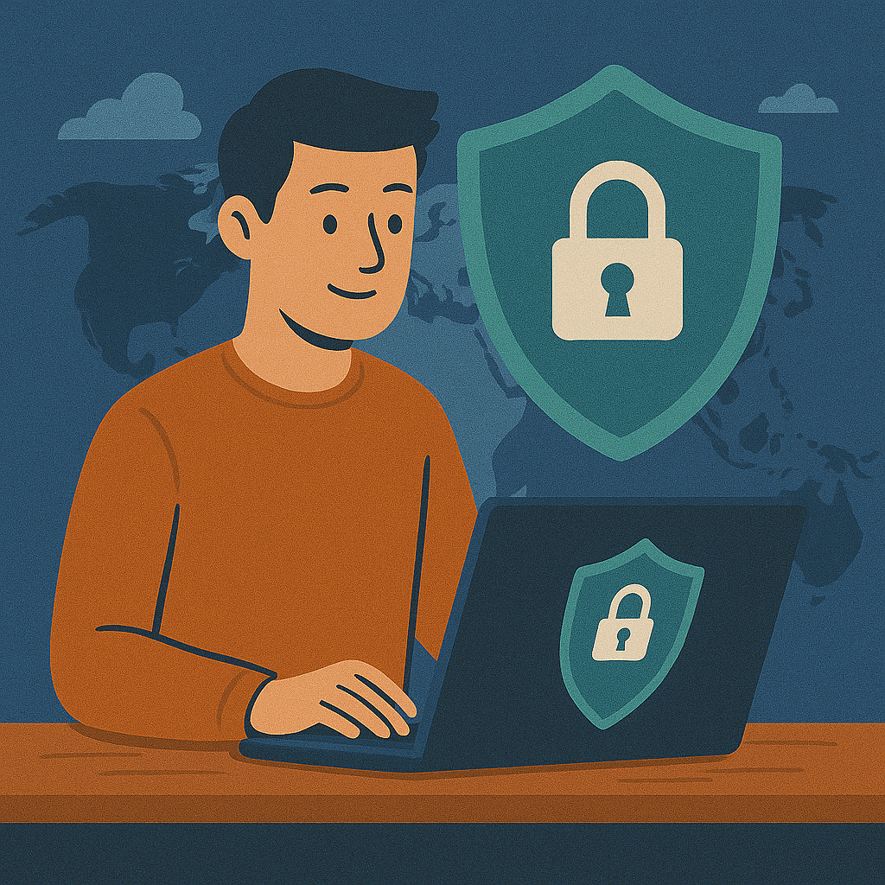

Gratis VPN 2026: Beste Opties in België & Waarom “Gratis” Vaak een Valstrik is

Start hier
Wat Belgische gebruikers meestal echt zoeken
In Vlaanderen en België draait “gratis VPN” zelden alleen om nul euro. Meestal gaat het om een combinatie van privacy op openbare wifi, geen abonnement, geen kredietkaart en een app die zonder veel gedoe werkt op laptop en mobiel. Daarom loont het om eerst te begrijpen wat een gratis dienst niet doet. Wie dieper wil vergelijken, vindt een bredere lijst in best gratis VPN en het verschil met betaalde opties in gratis vs. betaalde VPN.
Welke VPN is echt gratis en veilig in 2026?
| Service | Data limiet | Snelheid | Ideaal voor (België) | Actie |
|---|---|---|---|---|
| Proton VPN | Onbeperkt | Gemiddeld | Privacy, geen logs, dagelijks licht gebruik | Bekijk analyse |
| PrivadoVPN | 10 GB / maand | Hoog | Snel browsen in Vlaanderen en korte sessies | Bekijk analyse |
| Windscribe | 10 GB / maand | Gemiddeld | Streaming in beperkte vorm en losse tests | Bekijk analyse |
Voor een langere shortlist met meer voor- en nadelen kun je ook naar best gratis VPN. De kern blijft wel dezelfde: gratis is bruikbaar als startpunt, maar zelden comfortabel genoeg voor alles tegelijk.
Geen zin in limieten?
Als je liever minder gedoe wilt met data, snelheid en serverkeuze, bekijk dan de betaalbare alternatieven. Dat is vaak eerlijker dan te blijven zoeken naar een gratis dienst die alles tegelijk moet doen.
Openbaarmaking: dit zijn affiliate-links.
Waarom zeggen mensen dat VPN onzin is?
Omdat veel verwachtingen verkeerd liggen. Een VPN maakt je niet onzichtbaar voor Google, Facebook of elk platform waar je zelf inlogt. Het verbergt vooral je IP-adres voor websites en je internetprovider, en het versleutelt je verkeer op het netwerk dat je gebruikt. Dat is nuttig, maar niet magisch.
Daarnaast voelen mensen vaak snel de nadelen van slechte of gratis diensten: lagere snelheid, meer serverdruk en minder controle. Daar komt de frustratie vandaan. Wie de beperkingen eerlijk wil zien, leest best ook nadelen van VPN en de praktische afweging in gratis vs. betaalde VPN.
Wie wil weten of een VPN juridisch problematisch is, kan ook meteen naar is VPN legaal. In België zit het probleem meestal niet in het gebruik van een VPN op zich, maar in wat je ermee doet.
Gratis VPN voor iPhone en Android
Op mobiel is de verleiding groot om gewoon de eerste app uit de App Store of Google Play te nemen. Dat is precies waar gratis VPN’s vaak misgaan: mooie screenshots, maar weinig uitleg over logs, serverkeuze of limieten. Gebruik daarom alleen officiële store-links en controleer altijd of de aanbieder duidelijk communiceert over privacy.
Voor praktische stappen kun je verder lezen in VPN op Android en VPN op iPhone en iOS. Als je onderweg vaak openbare netwerken gebruikt, sluit dit logisch aan op openbare wifi.
België Veilig
Gebruik een gratis VPN vooral als extra laag op openbare wifi, niet als wondermiddel voor alles tegelijk.
Focus: Proton VPN, PrivadoVPN, Windscribe en de “Google”-zoekopdracht
Proton VPN blijft de meest logische referentie als je in België onbeperkte data zoekt zonder onduidelijk verdienmodel. PrivadoVPN is sneller voor kort en gericht gebruik, maar niet onbeperkt. Windscribe voelt flexibeler aan voor casual gebruik, al blijven de grenzen voelbaar zodra je meer streamt of meerdere toestellen combineert.
Zoekopdrachten zoals “VPN Google” of “gratis VPN Google” zijn vaak verwarrend. Meestal bedoelen mensen een VPN-app uit Google Play, een Chrome-extensie of gewoon een VPN die ze via Google gevonden hebben. Dat maakt de intentie rommelig. In de praktijk is het beter om een echte VPN te vergelijken met proxy vs. VPN en bij desktopgebruik ook te kijken naar VPN in Edge of browser-extensies als aparte categorie.
FAQ
Heeft KPN een gratis VPN?
Nee. KPN biedt wel netwerkbeveiliging en andere diensten, maar geen echte gratis VPN-app zoals gebruikers meestal bedoelen met die zoekopdracht.
Bestaat er een VPN zonder registratie?
Ja, maar wees voorzichtig. Zonder registratie is niet automatisch beter voor privacy, want sommige diensten zijn minder duidelijk over logs of werken eerder als proxy.
Is een gratis VPN veilig?
Dat hangt af van het model. Een bekende freemium-dienst is meestal veiliger dan een onbekende app die niet uitlegt hoe ze geld verdient.
Werkt een gratis VPN voor VRT MAX of VTM GO op vakantie?
Soms, maar meestal niet stabiel genoeg. Voor streaming buiten België of buiten de EU bots je sneller op trage of overvolle servers.
Wat is de beste gratis VPN in België?
Voor onbeperkte data en een duidelijk freemium-model is Proton VPN vaak de veiligste keuze. Andere gratis opties kunnen nuttig zijn, maar met scherpere limieten.
Wil je minder limieten en minder gedoe?
Dan is het vaak slimmer om betaalbare opties te vergelijken in plaats van te blijven zoeken naar een gratis dienst die alles tegelijk moet oplossen. Start met gratis vs. betaalde VPN en kies daarna pas.
Openbaarmaking: deze links zijn affiliate-links.